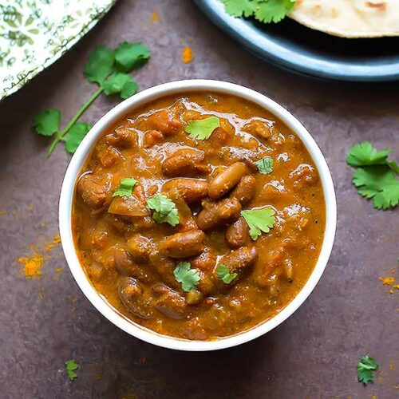

Rajma Masala Recipe

[Image Source: https://www.ticklingpalates.com/]
Description
Rajma masala is a North Indian curried dish made with kidney beans, onions, tomatoes, spices and herbs.
Ingredients
- 1 cup Rajma (Red Kidney Beans)
- 1 small piece of Bay Leaf
- 1-inch long piece of Cinnamon Stick
- 1 Green Cardamom (or black cardamom)
- 1/2 teaspoon Cumin Seeds
- 1 Onion, finely chopped (approx. 1/2 cup)
- 1 teaspoon Ginger-Garlic Paste (or crushed)
- 1 Green Chilli, slit lengthwise (or more for spiciness)
- 2 medium Tomatoes, chopped (approx. 1 cup)
- 1 teaspoon Red Chilli Powder
- 1 teaspoon Cumin-Coriander Powder
- 1/4 cup Milk (or 2 tablespoons fresh cream)
- 2 tablespoons Oil
- Salt to taste
Steps
- Thoroughly wash rajma (beans) to remove any dirt and debris. Soak them in water for 6-8 hours or overnight.
- Drain the water and transfer soaked beans into a 2-3 liter capacity pressure cooker. Add 1¾ cups water and salt; close the lid and pressure cook over medium flame until it turns soft, for around 4-5 whistles. Turn off the flame and let the pressure release naturally (around 5-7 minutes) before opening the lid. Don’t open the lid immediately as beans may not have cooked fully yet and steam inside pressure cooker will continue to cook them. Check the beans for softness, if they are not soft, cook them more for 2 whistles (if required add more water). Drain excess water from cooked beans and keep both water and Rajma aside for later use.
- Heat 2-tablespoons oil in a pan (or kadai) over medium flame. When oil is medium hot, add 1 small piece of bay leaf, 1-inch long piece of Cinnamon, 1 green cardamom and 1/2 teaspoon cumin seeds, sauté for 30 seconds. Add chopped onion and sauté until onion turns translucent. Add 1-teaspoon ginger-garlic paste and 1 green
- Sauté for 1-2 minutes.
- Add chopped tomato and salt.
- Sauté until tomatoes turn soft, it will take around 3-4 minutes. Add 1-teaspoon red chilli powder and 1-teaspoon cumin-coriander powder.
- Mix well and sauté for a minute.
- Add boiled kidney beans and mix well.
- Add 1-cup water (or little more) (drained water from step-2 + normal water) and mix well. Mash some beans with the backside of a spoon to thicken the gravy and improve taste and texture. Cook for 5-6 minutes or until gravy turns thick. Gravy would thicken more as it cools down, so do not cook it until it turns very thick. Taste for the salt at this stage and add more if required.
- Add 1/4 cup milk (or 2 tablespoons fresh cream).
- If you are adding milk, cook for 2-3 minutes and turn off the flame. If you are adding fresh cream, mix well and turn off the flame. Rajma masala curry is ready; transfer it to a serving bowl and garnish with chopped coriander leaves.
[Recipe Source: https://foodviva.com/]